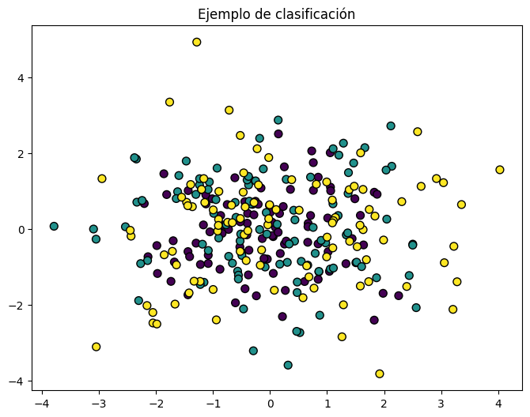
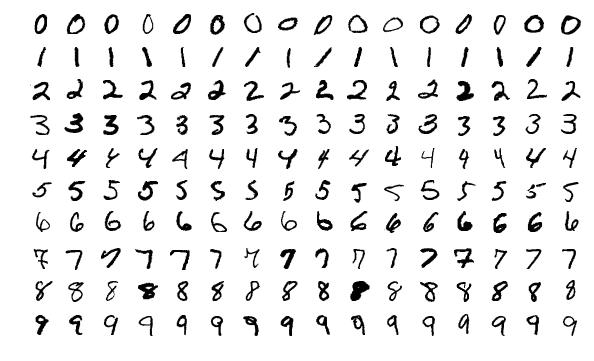

Problemas de clasificación#
Tras explorar detalladamente los intricados mecanismos de los algoritmos de regresión y adentrarnos en los desafíos asociados con la calidad y la variabilidad de los datos, es imperativo dirigir nuestra atención hacia otro componente esencial del aprendizaje automático: los problemas de clasificación.
La clasificación es un proceso esencial en el ámbito de la inteligencia artificial y el aprendizaje automático, donde el objetivo principal es asignar etiquetas o categorías a datos no etiquetados con base en patrones identificados en conjuntos de datos previamente etiquetados. A pesar de los avances significativos en este campo, los problemas de clasificación persisten y presentan desafíos multifacéticos que impactan diversas aplicaciones. En este contexto, es crucial explorar y comprender las complejidades asociadas con la clasificación para desarrollar enfoques más efectivos y precisos.
{kind=link}
A medida que el campo avanza y se expande, la capacidad de asignar categorías precisas a datos no etiquetados se vuelve cada vez más crucial en numerosos contextos, desde la toma de decisiones empresariales hasta la atención médica y la detección de fraudes. Sin embargo, la complejidad inherente a la clasificación plantea desafíos significativos que requieren un análisis exhaustivo y soluciones innovadoras.
En este contexto, es fundamental reconocer que los problemas de clasificación van más allá de la mera aplicación de algoritmos. Aunque los algoritmos de regresión y clasificación comparten fundamentos comunes, la transición hacia la asignación de categorías introduce nuevas capas de complejidad y desafíos específicos que deben abordarse de manera diligente. La variabilidad en los datos, que ya hemos explorado en el contexto de la regresión, se manifiesta de manera única en el ámbito de la clasificación, donde la presencia de clases desequilibradas, datos ruidosos y la falta de homogeneidad pueden comprometer la capacidad de los modelos para generalizar de manera efectiva.
Asimismo, la selección y extracción de características relevantes se convierte en un pilar fundamental en el proceso de clasificación. La calidad y pertinencia de las características determinan la capacidad del modelo para discernir patrones distintivos y tomar decisiones acertadas. Con la experiencia adquirida en la regresión, enfrentamos ahora la tarea de adaptar y optimizar estrategias para garantizar que las características seleccionadas sean óptimas para la tarea de clasificación.
Aplicación práctica de la clasificación#
La clasificación tiene aplicaciones prácticas en una amplia variedad de campos, aprovechando su capacidad para asignar categorías o etiquetas a datos no etiquetados. Aquí se ven algunas aplicaciones prácticas de la clasificación:
Detección de Spam en Correos Electrónicos: Los algoritmos de clasificación son utilizados para identificar automáticamente correos electrónicos no deseados o spam. Analizan el contenido y las características de los correos para determinar si pertenecen a la categoría de spam o no.
Diagnóstico Médico: En medicina, los algoritmos de clasificación pueden ayudar en la clasificación de imágenes médicas, como radiografías, resonancias magnéticas o tomografías computarizadas. Pueden utilizarse para detectar enfermedades o identificar patrones específicos asociados con condiciones médicas.
Reconocimiento de Escritura a Mano: Aplicaciones como la lectura automática de cheques o la clasificación de formularios escritos a mano hacen uso de algoritmos de clasificación para interpretar y reconocer caracteres escritos a mano.
Sistemas de Recomendación: Los algoritmos de clasificación son fundamentales en sistemas de recomendación, como los utilizados por plataformas de streaming, comercio electrónico o redes sociales. Pueden clasificar y prever las preferencias del usuario para recomendar productos, películas, música o contenido personalizado.
Detección de Fraudes en Transacciones Financieras: En el sector financiero, los algoritmos de clasificación pueden identificar patrones sospechosos en transacciones para detectar posibles fraudes. Clasifican las transacciones como legítimas o fraudulentas en función de ciertos criterios.
Clasificación de Documentos: Los algoritmos de clasificación son utilizados para organizar grandes conjuntos de documentos. Por ejemplo, pueden clasificar automáticamente correos electrónicos, artículos de noticias o documentos legales en categorías específicas.
Automatización de Servicio al Cliente: En el ámbito de atención al cliente, los sistemas de chatbot utilizan algoritmos de clasificación para comprender y clasificar las consultas de los usuarios, proporcionando respuestas automatizadas o enrutando las solicitudes al departamento correspondiente.
Vehículos Autónomos: En la conducción autónoma, la clasificación de objetos en tiempo real es esencial. Los algoritmos pueden clasificar peatones, vehículos, señales de tráfico y otros elementos en el entorno del vehículo para tomar decisiones informadas sobre la conducción.
Datos a utilizar#
El conjunto de datos MNIST (Modified National Institute of Standards and Technology) es un conjunto de datos muy conocido en el campo del aprendizaje automático y la visión por computadora. Este conjunto de datos se utiliza comúnmente para entrenar y evaluar algoritmos de clasificación de imágenes, especialmente para la clasificación de dígitos escritos a mano. Fue creado por modificar muestras del conjunto de datos original de dígitos del NIST.
El conjunto de datos MNIST consta de imágenes en escala de grises de dígitos escritos a mano, cada una de ellas en un formato de 28x28 píxeles. Cada imagen representa un solo dígito del 0 al 9. Por lo tanto, hay 10 clases en total. Cada píxel en la imagen tiene un valor de intensidad de 0 a 255, donde 0 representa el blanco y 255 el negro.
{kind=link}
Para importar este dataset, simplemente debemos hacer uso del siguiente código:
from sklearn.datasets import fetch_openml
mnist = fetch_openml("mnist_784", version=1)
X, y = mnist["data"], mnist["target"]